Most homes have one wall near the door doing absolutely nothing.
A drop zone turns that wall into the spot where keys, bags, mail, and shoes actually land, instead of landing on the kitchen counter, the stairs, or the floor.
This is the build, one wall, broken down piece by piece.

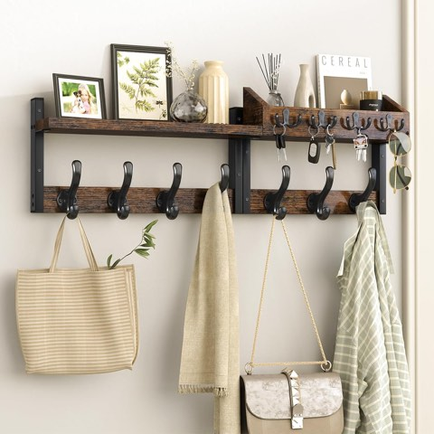
Evermagin 29 Inch Wall Mount Coat Rack with Shelf for Entryway, Rustic Brown
Shop on AmazonMistakes Worth Avoiding
Hanging hooks too high for the shortest regular user is a common and easily avoided mistake, the system should work for everyone in the household, not just the tallest person.
Adding too much decor before the functional pieces are in place is the other common trap, resulting in a wall that looks finished but doesn't actually solve the clutter problem.
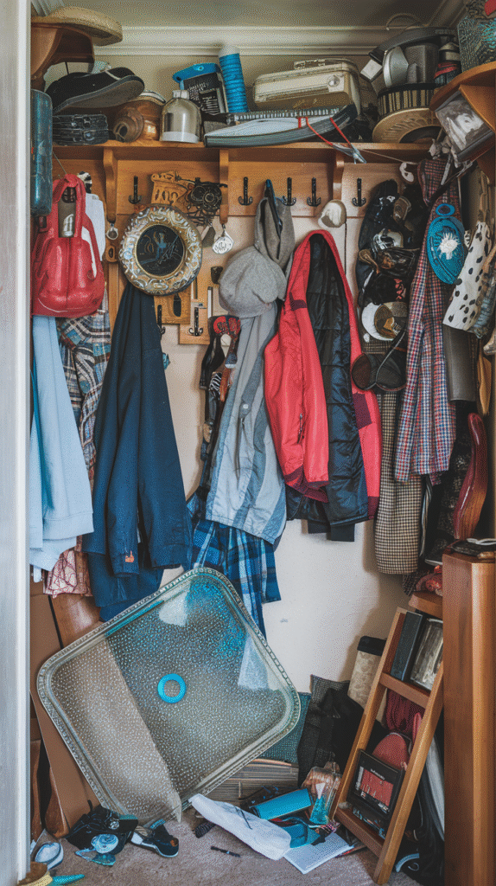
The Must-Haves Checklist
Hooks, a flat surface, and at least one container for loose items are the true non-negotiables, everything else on this list is enhancement.
Confirming these three exist before adding anything decorative keeps the wall functional first, styled second.
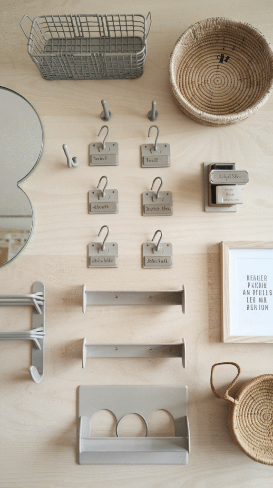
1. Make It Personal
A piece of art, a favorite color, or a small meaningful object keeps the wall from feeling purely utilitarian.
This final layer is what makes the drop zone feel like part of the home's design, not just a chore solved.
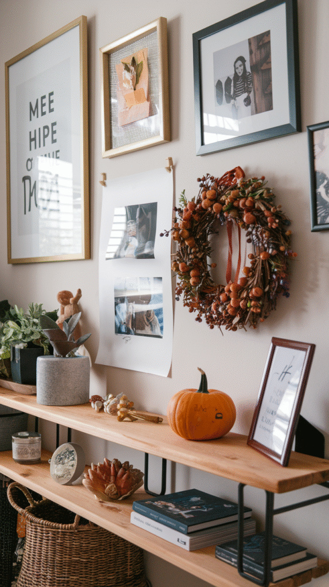
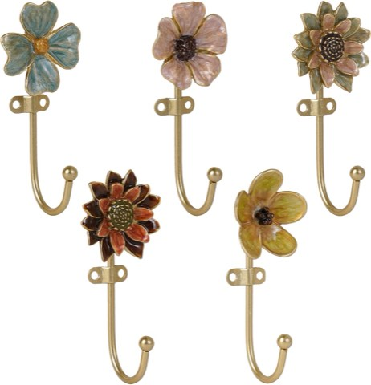
SOFFEE DESIGN Floral Wall Hooks, Set of 5, French Garden Entryway Decor
Shop on Amazon2. Label What Needs Labeling
A simple label on baskets or hooks, especially in a household with multiple people sharing the space, keeps the system from breaking down within the first month.
This isn't about being precious, it's what keeps everyone actually using the system as designed instead of defaulting back to old habits.
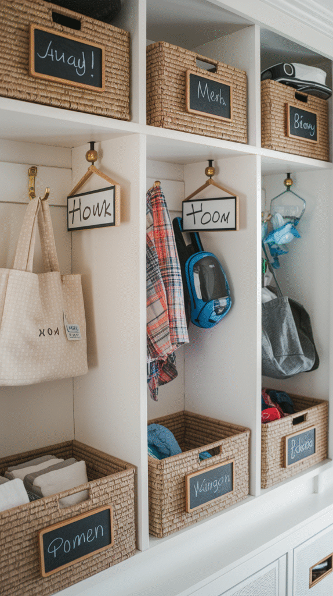
3. Don't Skip the Mirror
A mirror near the drop zone adds genuine daily function, a last check before heading out, while also reflecting light back into what's often a dim part of the home.
This earns its spot on the wall through pure usefulness, not just styling.
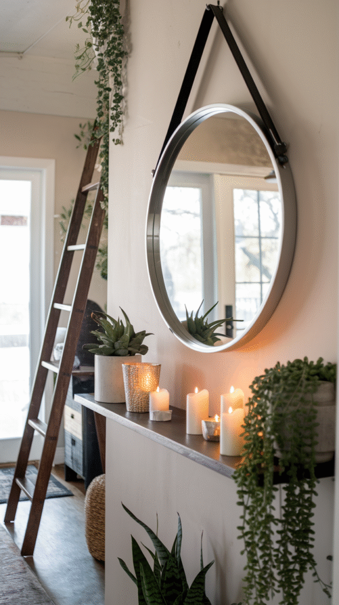

4. Consider Seating
A small bench nearby, if space allows, upgrades the whole drop zone from a standing-only setup to one that handles shoe changes comfortably.
This is the one addition that depends most on available floor space, so it's worth confirming fit before committing.
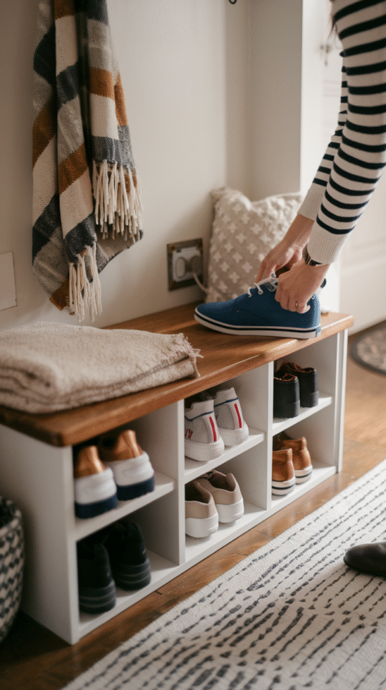
5. Bring in Baskets
A basket or two catches the smaller, harder-to-hang items, gloves, sunglasses, loose mail, that would otherwise pile up on the shelf itself.
This keeps the wall from sliding into visual clutter even as it gets used daily.
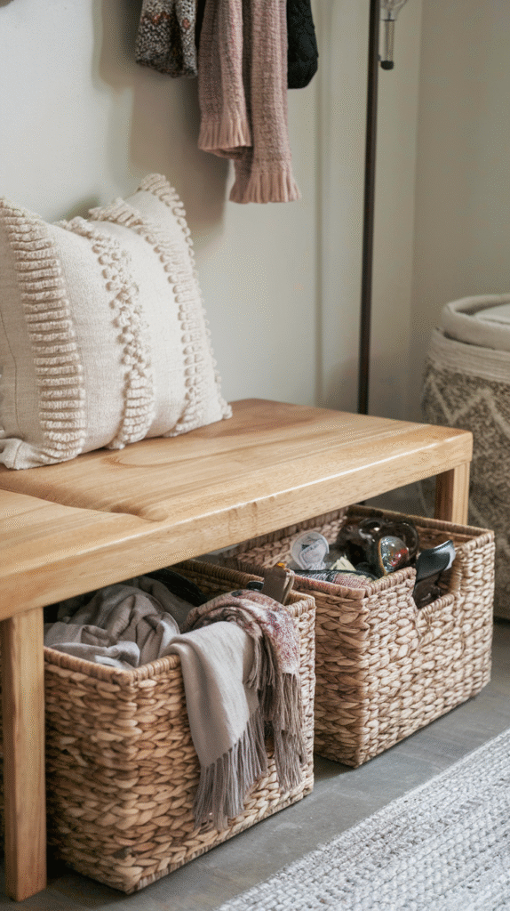
6. Add a Floating Shelf
A shelf above or beside the hooks adds a flat surface for mail, keys, or anything that doesn't hang well.
This also gives the wall some visual structure beyond a row of hooks alone.
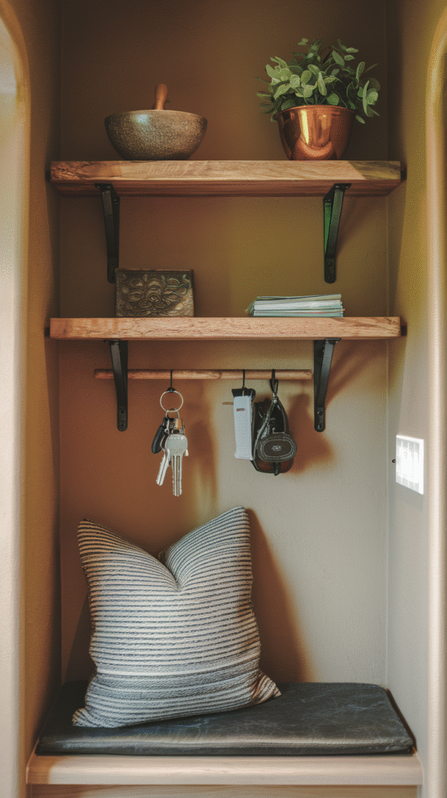
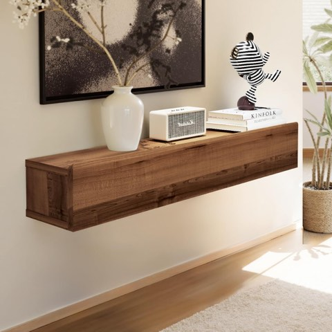
Floating Solid Wood Console Table, 32 Inch, Wall Mounted Narrow Entryway Table
Shop on Amazon7. Start With Hooks
Hooks are the single highest-value addition on this entire list, cheap, easy to install, and immediately useful for bags, coats, and keys.
A mix of heights works well for a household with kids, giving everyone their own reachable spot.
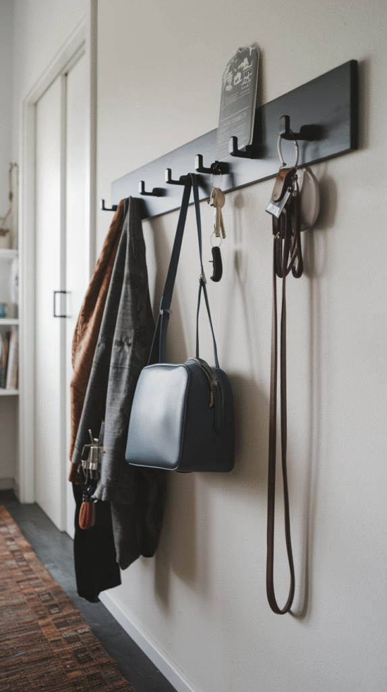
8. Evaluate the Wall First
Measuring the actual available space, and noting where the door swings and where foot traffic naturally flows, prevents a drop zone that looks great but gets in the way.
This step is easy to skip in the excitement of planning, but it's what keeps the finished wall genuinely usable.
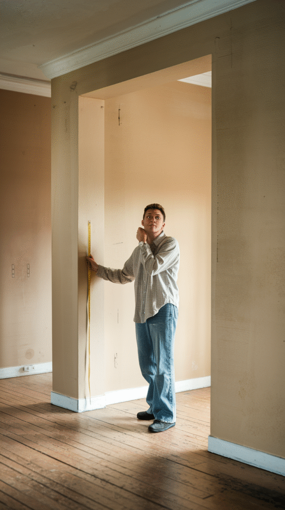
Why a Drop Zone Actually Matters
Without one, the daily clutter of coming and going has to land somewhere, and it usually lands in whatever spot is most inconvenient for everyone else in the house.
A dedicated wall solves this permanently, giving every category of daily clutter its own designated spot.
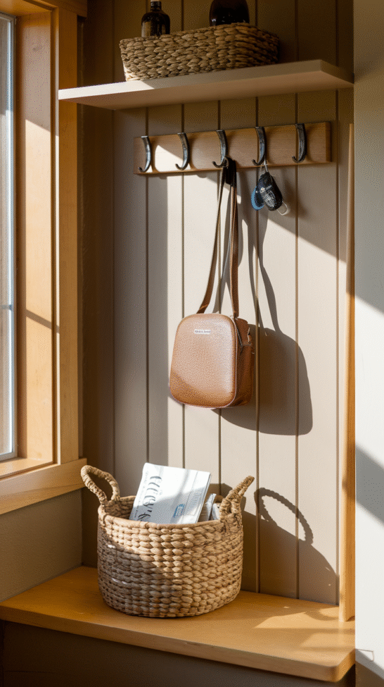
You've Got This
None of these 8 elements require a weekend of work individually.
Start with hooks, since they deliver the most function for the least effort, then build out the rest of the wall as time and space allow.
A genuine drop zone solves a daily problem that decor alone never could.
Give the wall a few weeks of real use before deciding it's finished. The actual household habits will make it obvious which piece is missing and which one never gets touched.